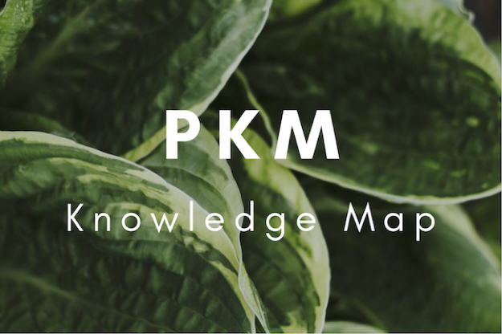

PKM - Personal Knowledge Map
2022.06.09

独立思考能力是科学研究和创造发明的一项必备才能。在历史上任何一个较重要的科学上的创造和发明，都是和创造发明者的独立地深入地看问题的方法分不开的。——华罗庚
项目介绍
增值计划包含四部分，阅读增值，解释为知识或技能本身；运动增值，解释为身体机能的锻炼，习惯增值，解释为方法的调整，时间增值，解释为效率的提升。（目前为PKM，以后会逐步将后三个也纳入其中😁）
个人系统的分类则更加丰富，个人系统社群现在(2023.2.16)分为时间管理，知识管理，目标管理，情绪管理，健康管理，财务管理，人际交往八个小组。
PKM(Personal Knowledge Map)计划是为阅读增值部分或知识系统设计的方案，个人知识地图致力于在构建知识树的基础上加入其他要素，使之成为具有可发展性，强关联性的新型知识树。
个人知识地图关注于：构建某学科的全面的知识树；将不同学科知识树进行关联与整合；将基于Xmind的知识图提炼出知识数据关系。 目前阶段专注于构建单独学科的内在知识导图。
个人知识地图领域探索：
“理科是人的腿”，是人们实践的工具
- PKM主要集中于计算机及相关领域
- PKM同时兼顾深度与广度，但不会沦为笔记的奴隶。生活中学到什么，需要什么就去记录什么，剩下的仅仅是浅尝辄止。
“‘文科’是人的另一条腿”。在物理领域，“科学靠两条腿走路,一是理论,一是实验。有时一条腿走在前面,有时另一条腿走在前面。只有使用两条腿,才能前进。”（密立根）。理论与实验以前以后，彼此平等。马克思认为“实践是认识的来源、目的、检验标准、前进动力，认识又对实践产生反作用”，彼此相互影响。
- PKM文科系统聚焦于管理、法律、心理等问题
- PKM文科系统为辅助部分，仅做笔记梳理用，目前成不了体系
“哲学是人的大脑”。
- PKM哲学部分聚焦于马克思主义与马克思主义中国化内容及其相关领域。
- 会兼顾哲学史，但不是重点。
- 文科与哲学都归纳于文史哲目录中。
“艺术是衣服”。
- PKM艺术部分为画龙点睛部分，作用是锦上添花，而不是雪中送炭。
内容地图
计算机科学 —— 基础理论
| (电路分析基础) | (模拟电路) | (数字电路) |
| (数字系统设计) | (计算理论) | |
| 🌟计算机组成原理 | 🐦计算机体系结构 | |
| (嵌入式系统) | (程序设计理论) | |
| 🌟操作系统 | (数据库) | |
| 🌟计算机网络 | (现代交换原理) | (下一代网络技术) |
| (网络安全) | (中间件) | |
| 🌟数据结构 | (算法设计与分析) | (软件工程) |
| (计算机图形学) | (GPU编程) | (并行计算) |
| (分布式与云计算) | (区块链) |
计算机科学 —— 应用
| (人工智能) | (机器学习) | (计算机视觉) |
| (自然语言处理) | (知识图谱) | (风控模型) |
| (推荐系统) | ||
| (仿真) | (超计算) | (大数据) |
| (虚拟现实) | (增强现实) | (介导现实) |
| (物联网) | (黑客技术) | |
| (多媒体基础) | （图像与视频处理） | （交互式媒体） |
| (人机交互) |
计算机科学 —— 关联学科（非数学）
| (信号与系统) | (通信原理) | (量子计算) |
| (信息论) | （数字信号处理） | （高级变换） |
| (密码学) | ||
计算机科学 —— 编程/标记语言/语法格式
| (VHDL) | 🔗Verilog | (Assembly) |
| (C) | (C++) | (C#) |
| (Java) | ||
| 🔗Go | 🔗Python | 🔗Julia |
| 🔗SQL | 🔗Matlab | 🔗Solidity |
| 🔗Swift | ||
| 🔗HTML | 🔗CSS | ✏️Markdown |
| 🔗Javascript | 🔗TypeScript | 🔗PHP |
| (ABAP) | (APL) | (asciiarmor) |
| (ASN.1) | 🔗asp | (bash) |
| (basic) | (cassandra) | 🔗ceylon |
| (clike) | (clojure) | 🔗cmake |
| (cobol) | (coffeescript) | (commonlisp) |
| (CQL) | (crystal) | (cypher) |
| (cython) | (D) | (dart) |
| (diff) | (django) | (dockerfile) |
| (dtd) | (dylan) | (ejs) |
| (elixir) | (elm) | (embeddedjs) |
| (erb) | (erlang) | (F#) |
| (flow) | (forth) | (fortran) |
| (fsharp) | (gas) | (gfm) |
| (gherkin) | (glsl) | (groovy) |
| (handlebars) | (haskell) | (haxe) |
| (htaccess) | (http) | (hxml) |
| (idl) | (ini) | (jade) |
| (jinja2) | (json) | (jsp) |
| (jsx) | (kotlin) | (latex) |
| (less) | (lisp) | (livescript) |
| (lua) | (makefile) | (mariadb) |
| (mathematica) | (mbox) | |
| (mermaid) | (mssql) | (nginx) |
| (nim) | (nsis) | (objc) |
| (objective-c) | (ocaml) | (octave) |
| (oz) | (pascal) | (perl) |
| (perl6) | (pgp) | (plsql) |
| (powershell) | (properties) | (protobuf) |
| (pseudocode) | (q) | (R) |
| (react) | (reStructuredText) | (rst) |
| (ruby) | (rust) | (SAS) |
| (scala) | (scheme) | (scss) |
| (sequence) | (sh) | (smalltalk) |
| (SPARQL) | (spreadsheet) | (sqlite) |
| (squirrel) | (stylus) | (tcl) |
| (tex) | (tiddlywiki) | (tiki wiki) |
| (toml) | (tsx) | (turtle) |
| (twig) | (V) | (vb) |
| (vbscript) | (vue) | (velocity) |
| (web-idl) | (wiki) | (xaml) |
| (xml) | (xml-dtd) | (xquery) |
| (yacas) | (yaml) | |
计算机科学 —— 软件与技术
| ⭐️以太坊 | 🔗Arduino | ✏️ESP8266 |
| 🔗Git | (Xcode) | (Protege) |
| (OpenGL) | (Unity) | 🔗Vue |
| (React) | (Angular) | (MongoDB) |
| (Sqlite) | (Ajax) | (Linux) |
| ✏️Minecraft | ✏️PS | AU |
经济与管理
| (宏观经济学) | （微观经济学） | |
| （企业管理） | （产品开发） | （企业战略管理） |
艺术设计
- 💎：熟能生巧
- 🌟：已经多次迭代渐入佳境
- ⭐️：已经完成一次知识点覆盖
- ✏️：正在进行学习
- 🐦：已加入学习计划
- 🔗：连接他人学习系统
- ( )：草稿构建
零碎专题
Matlab资源：公众号
人工智能相关框架梳理：
Python
tensorflow：
keras
- tensorflow的进一步封装
- 官网：https://keras.io/getting_started/
Java
Julia
JS
项目逻辑
利用Xmind搭建内部富有关联的知识地图 -> learn.xmind

利用PKMViewer中的工具，将思维导图中的数据提炼出来，进行处理，生成HTML展示。

可以通过Nginx搭建属于自己的知识展示网站

可以将数据提炼为关系，插入到Neoj4知识图谱中。

知识结构为通过思维导图连接的知识点（项目/领域标题），与通过Markdown文档表现的具体内容笔记。通过Docusaurus进行静态网络的搭建，快速生成对应博客。
想挖的坑
计算机网络
- 项目要求：基于JS，生成动态的可视化看板，可以进行数据交互。需要做到简单易用，一个浏览器就能运行。
计算机组成原理
数据结构
数据结构
- 项目要求：AVL左旋右旋动画-提起父节点，高度超过爷节点，子节点吸到爷节点上。每个节点展现出磁力互斥感。
去除所有导图内容中可能存在版权问题的成分，去除可能存在版权问题的资料，将项目分成个人部分与开源部分，公开的资料不含敏感文件。
所有导图适配知识图谱导入工具，注重构建知识关联。